Personajes
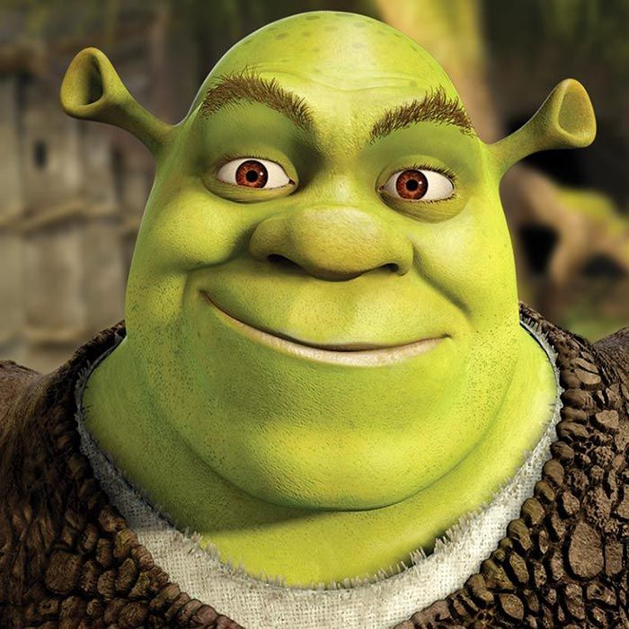
Shrek
Shrek es un ogro que vive solo en su pantano. Aunque al inicio prefiere estar aislado, a lo largo de la historia aprende el valor de la amistad, el amor y la aceptación.

Burro
Burro es el mejor amigo de Shrek. Es muy hablador, divertido y siempre positivo. A pesar de ser muy diferente a Shrek, logra crear una amistad muy fuerte con él.
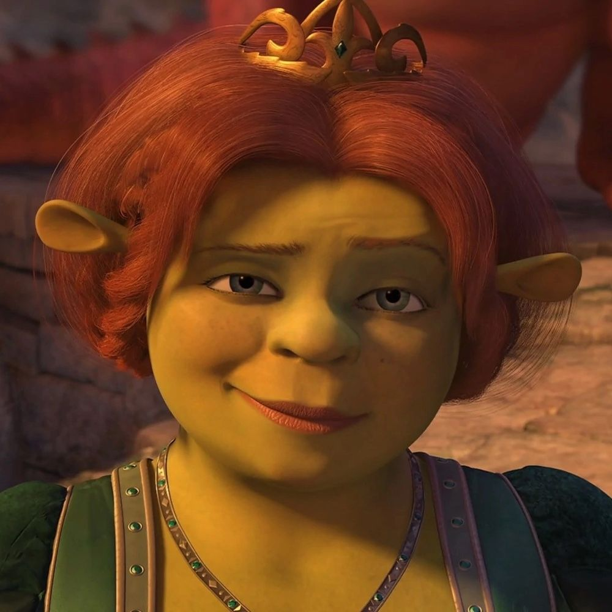
Fiona
Fiona es una princesa valiente que guarda un gran secreto. Su historia demuestra que la verdadera belleza está en el interior y no en las apariencias.
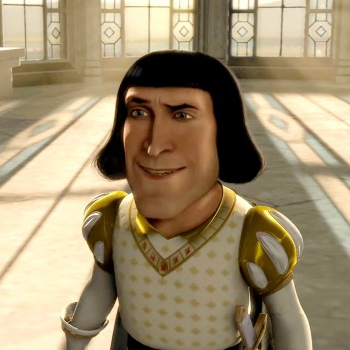
Lord Farquaad
Es el villano de la primera película. Representa la obsesión por la perfección y el poder, sin importar los demás.
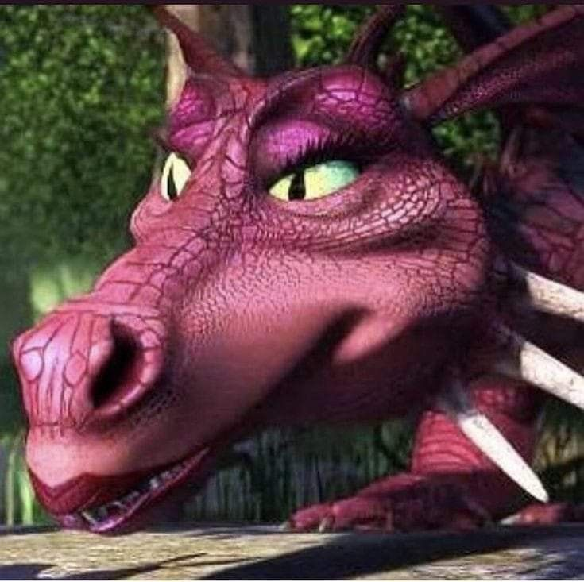
Dragona
Una dragona feroz al inicio, pero que luego muestra su lado amoroso al enamorarse de Burro.
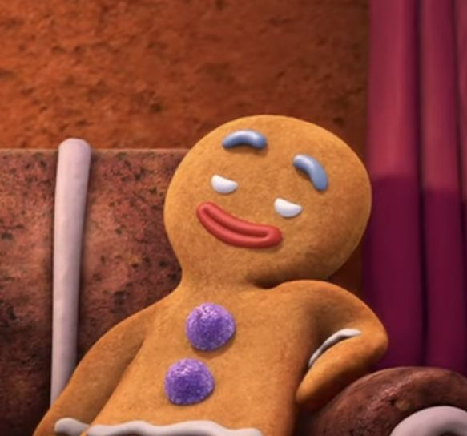
Jengi
El hombre de jengibre es pequeño pero valiente. Aporta humor y personalidad a la historia.
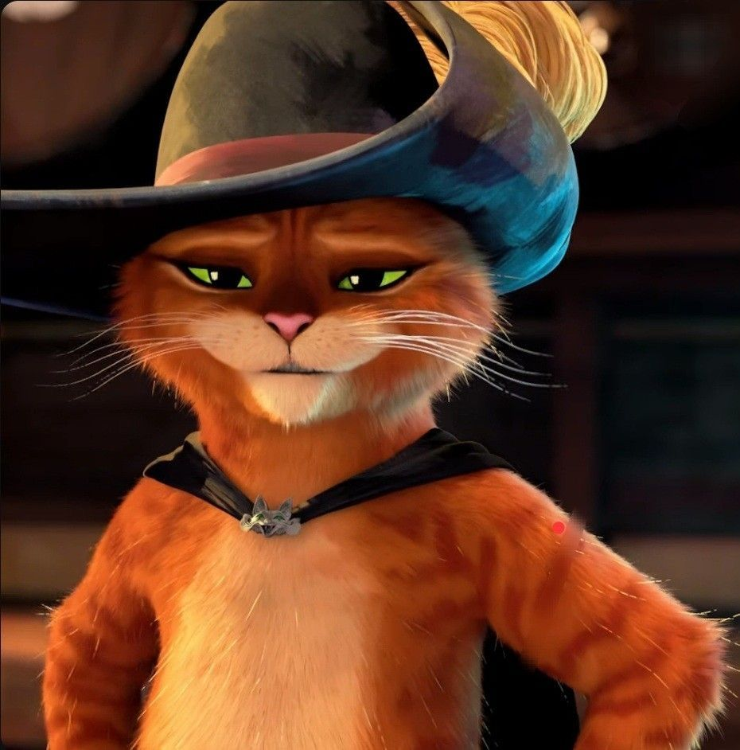
Gato con Botas
Un gato espadachín muy hábil y valiente. Es conocido por su mirada tierna que usa para manipular a los demás y lograr sus objetivos.
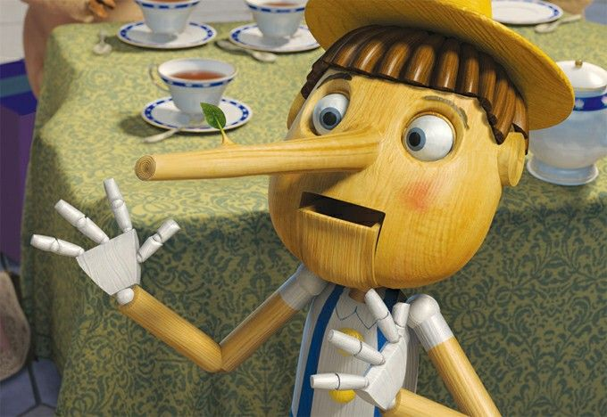
Pinocho
Un muñeco de madera que sueña con ser real. Tiene la costumbre de decir mentiras, lo que hace que su nariz crezca.
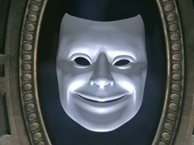
Espejo Mágico
Un espejo encantado que siempre dice la verdad. Ayuda a elegir princesas y da consejos con un estilo muy divertido.
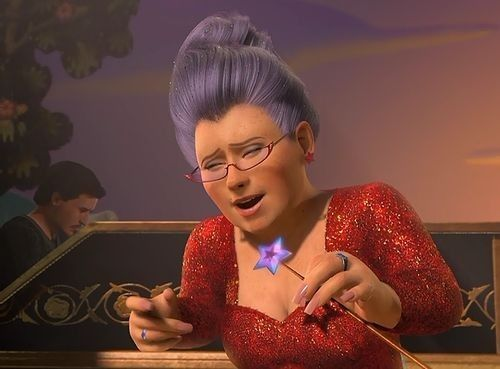
Hada Madrina
Un personaje poderoso que maneja la magia a su favor. Aunque parece amable, en realidad busca controlar todo para su propio beneficio.
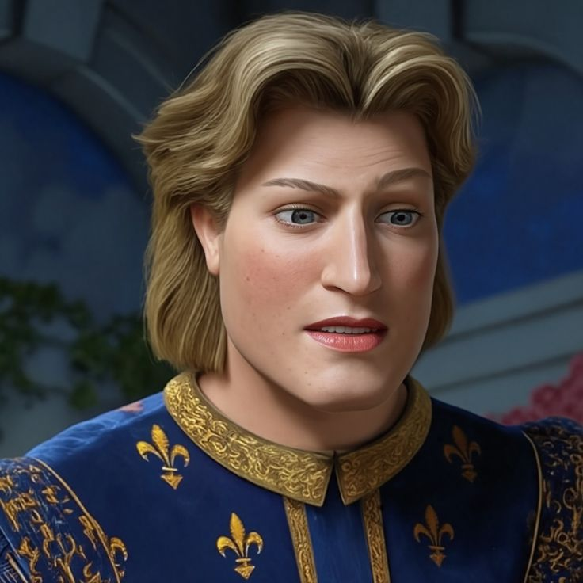
Príncipe Encantador
Hijo de la Hada Madrina. Es arrogante y cree que todo debe girar alrededor de él, buscando ser el héroe de la historia.
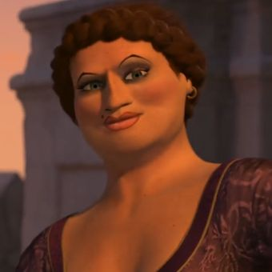
Doris
Una de las hermanastras de Cenicienta. Es ruda pero divertida, y demuestra que no todo es lo que parece en los cuentos.